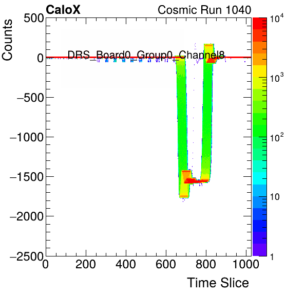

TimeReference_DRS_Board1_Group0_Channel8_subtractMedian.png
TimeReference_DRS_Board1_Group1_Channel8_subtractMedian.png
TimeReference_DRS_Board1_Group2_Channel8_subtractMedian.png
TimeReference_DRS_Board1_Group3_Channel8_subtractMedian.png
TimeReference_DRS_Board2_Group0_Channel8_subtractMedian.png
TimeReference_DRS_Board2_Group1_Channel8_subtractMedian.png
TimeReference_DRS_Board2_Group2_Channel8_subtractMedian.png
TimeReference_DRS_Board2_Group3_Channel8_subtractMedian.png
TimeReference_DRS_Board0_Group0_Channel8_subtractMedian.png
